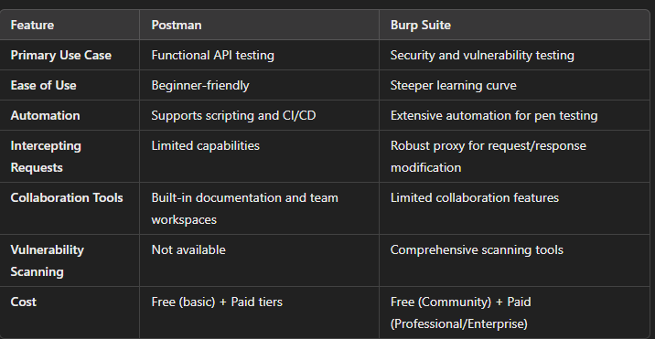

Postman vs. Burp Suite: A Comprehensive Comparison for API Testing and Security
What is Postman?
Postman is a widely-used API platform that simplifies the process of building, testing, and documenting APIs. It provides developers with an intuitive interface to interact with APIs, making it ideal for testing functionality, performance, and reliability.
Key Features:
- User-Friendly Interface: Postman offers a clean and interactive UI, making it easy to create and manage API requests.
- Comprehensive Testing Capabilities: Supports manual testing, automated testing (via Postman scripts), and integration with CI/CD pipelines.
- Collections and Documentation: Allows users to organize API requests into collections and generate documentation for seamless collaboration.
- Mock Servers: Developers can simulate API responses for testing without a live server.
- Environment Management: Postman enables the use of variables for managing multiple environments (e.g., dev, staging, production).
What is Burp Suite?
Burp Suite, developed by PortSwigger, is a powerful tool for web application security testing. While it offers API testing capabilities, its primary focus lies in identifying vulnerabilities and performing penetration testing.
Key Features:
- Security Testing Suite: Includes tools like the Proxy, Intruder, Repeater, and Scanner for comprehensive security assessments.
- Intercepting Proxy: Acts as a middleman between the client and server, allowing inspection and modification of requests and responses.
- Vulnerability Detection: Identifies issues such as SQL injection, XSS, authentication flaws, and more.
- Automation: Offers automation for repetitive tasks while allowing manual testing for precision.
- Extensibility: Includes a rich ecosystem of plugins and extensions for advanced testing.
Postman vs. Burp Suite: Feature Comparison
Conclusion
Choosing between Postman and Burp Suite depends on your goals. If your focus is on API development and functional testing, Postman is the clear choice. On the other hand, if security is your priority, Burp Suite is indispensable.
For most professionals, the ideal approach is to leverage both tools. Start with Postman for creating and verifying APIs, then switch to Burp Suite for rigorous security testing. By combining their strengths, you can ensure your APIs are both reliable and secure.